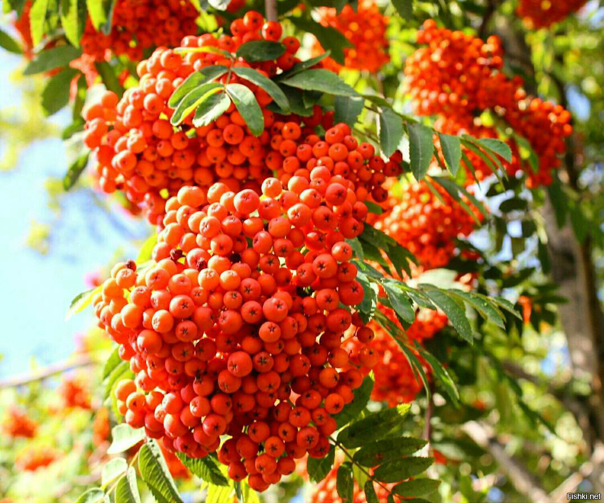

|  | Цены зависят от объёма. Объём закупки от 1 кг. Собственное производство. Самовывоз или доставка по России и миру в регионы через ФГУП "Почта России" и др. способами. Ягоды собраны вручную на солнечных полях Селигерского края (Селижаровский район Тверской области) в экологически чистом месте - на хуторах, вдали от фабрик, трасс, где вокруг холмы, река, 2 ручья, цветущие деревья и поля. Цена: 50-150 руб./кг |